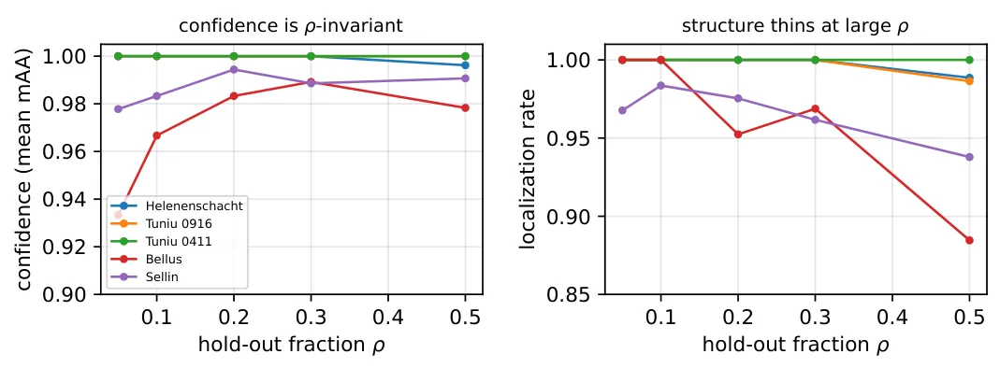
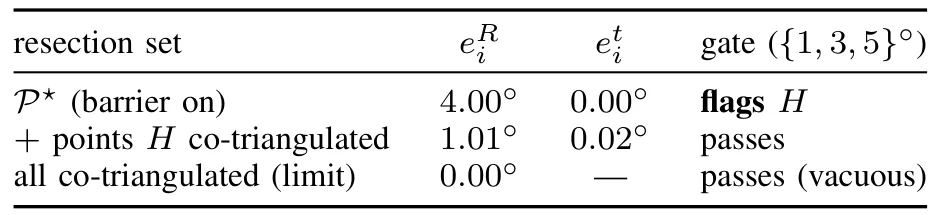
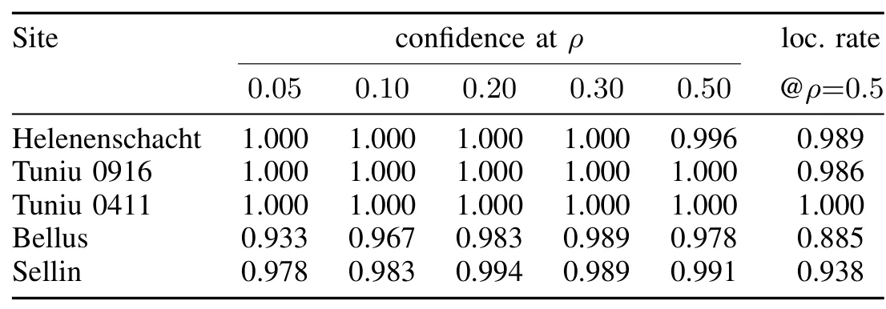
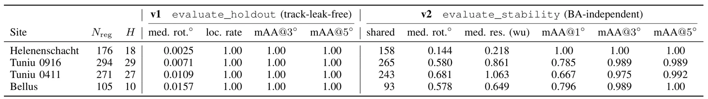
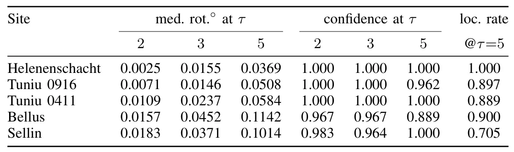
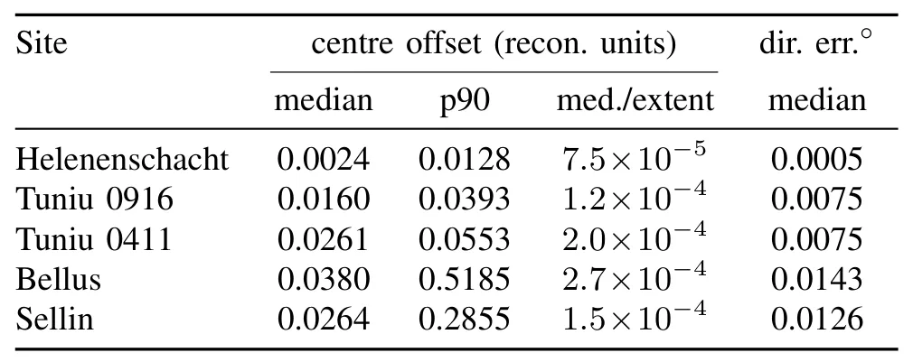

无轨迹泄漏的摄影测量留出自验证：协议、敏感性与边界Track-Leakage-Free Hold-Out Self-Validation for Photogrammetric Reconstruction: Protocol, Sensitivity, and Limits
对摄影测量和 SLAM 验收具有直接工程价值，跨多数据集给出清晰负面边界；需细看 held-out observations 参与 BA 与 stricter re-mapping 的协议差异。
一句话工作总结
严格的 track-level 留出仍无法识别自一致的全局畸变，因此内部一致性不能替代 RTK/GCP 等绝对精度控制。
摘要
本文研究三维重建能否在没有 ground truth 时估计自身可靠性。协议确定性留出部分图像，并只允许它们针对至少被两张 retained images 观测的 3D points 重定位，从 track level 阻止测试视图使用自己参与创建的结构，再汇总为 mAA confidence。跨 GNSS-referenced captures、ETH3D、EuRoC 与 IMC 2025 的实验表明：良好重建具有毫度级内部一致性，但 thresholded self-consistency 会饱和，confidence 接近 1.00 时真实 RTK error 仍可在同次采集中变化 14×；碎片化失败会被发现，而自一致的全局畸变可逃逸，产生 55–106 m 错误却保持 1.00 confidence。结论是该协议衡量内部几何一致性，而非绝对精度。
Automated photogrammetric inspection emits metric measurements from a 3D reconstruction whose own correctness is normally unknown without an external survey. Can a reconstruction estimate its own reliability with no ground truth? We formalise a track-leakage-free hold-out protocol: a deterministic subset of images is withheld and each re-localised against only 3D points seen by at least two retained images -- a track-level barrier so a view is never tested against structure it helped create -- aggregated into an mAA confidence. Held-out observations still entered the bundle adjustment that built the trusted structure, so we call it track-leakage-free (a stricter re-mapping variant confirms this at 3/5 deg). Across operational GNSS-referenced captures plus ETH3D, EuRoC and the IMC 2025 benchmark we report four findings. (i) The protocol is computationally well-posed: good reconstructions score millidegree self-consistency. (ii) Thresholded self-consistency saturates and does not track absolute accuracy: confidence stays near 1.00 while true RTK error swings up to 14x within a capture, and the per-capture correlation is sign-unstable across five captures (-0.57 to +0.98; pooled 95% CI spanning zero), so it cannot gate accuracy. (iii) It flags gross failure only when the failure destroys internal consistency: a fragmenting model drops confidence, but a single self-consistent, globally-distorted model evades it -- three of four captures gave one model wrong by 55-106 m at confidence 1.00. (iv) The same dichotomy holds on independent ETH3D and IMC 2025 ground truth. Track-leakage-free hold-out measures internal geometric consistency, not absolute accuracy: neither a substitute for control-point assessment nor a general gross-failure gate. We release the protocol and degradation harness.
中文解读摘录
- 作者：Behnam Asadi
- 价值判断：对工程验收非常重要的 negative/characterisation result。严格隔离 held-out view 与其参与生成的 3D tracks 后，自一致性仍会饱和，并对 coherent global distortion 失明。
- 结果与边界：confidence 可保持接近 1.00，而 RTK error 在同一 capture 内变化 14×；全局一致但错误的模型可偏离 55–106 m。结论是该指标只能衡量 internal geometric consistency，不能替代 control points 或充当通用绝对精度 gate。需进一步核查 held-out observations 仍参与 BA 的影响和 stricter re-mapping 结果。
- 链接：arXiv · PDF
图表/页面预览

{kind=link}

{kind=link}

{kind=link}

{kind=link}

{kind=link}

{kind=link}
